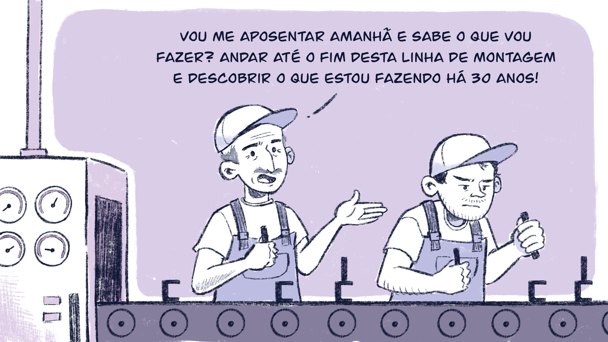

Iniciativas práticas no âmbito da docência, da gestão e da EaD
Incluímos, abaixo, algumas experiências de pesquisa desenvolvidas no âmbito do Programa de Pós-graduação Mestrado Profissional em Educação Profissional e Tecnológica em Rede Nacional (ProfEPT), acompanhadas dos resumos e dos links de acesso aos produtos educacionais. Eles abrangem práticas de ensino, de gestão e de EaD no ensino médio integrado.
Este Produto Educacional é fruto da dissertação “A participação das mulheres na gestão do Instituto Federal Goiano Campus Urutaí: uma perspectiva histórica (1953-2019)”. Trata-se de um documentário de aproximadamente 20 minutos que apresenta um breve histórico da EPT, tendo como foco as mulheres que atuaram na gestão da instituição pesquisada. http://educapes.capes.gov.br/handle/capes/585811
Experiências do IF Goiano na implantação do currículo integrado
Roda de conversa promovida para fins de elaboração de um Produto Educacional, com a participação de professores/coordenadores dos cursos técnicos integrados do IF Goiano narrando suas experiências com a implantação do currículo integrado, realizada durante a 2ª Semana de Planejamento Pedagógico do IFG - Campus Itumbiara. http://educapes.capes.gov.br/handle/capes/554379
Curso de criação de HQs utilizando tecnologias digitais
Com a utilização de tecnologias digitais, este é um Produto Educacional desenvolvido no Programa de Pós-graduação em Educação Profissional e Tecnológica (ProfEPT), do campus Ceres do IF Goiano. Destinado a estudantes dos cursos técnicos integrados ao ensino médio (Agropecuária, Informática para Internet e Meio Ambiente), foi ofertado na modalidade remota, utilizando-se como principal ferramenta o AVA – Moodle. Distribuído em quatro módulos e com enfoque na elaboração de HQs a partir das ferramentas digitais Make Beliefs Comix, Storyboard That, Pixton e Comica, totalizou trinta horas. Apresenta-se, neste encarte, o recorte do planejamento do curso, ou seja: justificativa, objetivos, matriz curricular, ementa, metodologia, recursos, avaliação e referências. Buscou-se, deste modo, promover práticas pedagógicas que estimulassem a formação crítica e significativa dos estudantes numa perspectiva omnilateral. http://educapes.capes.gov.br/handle/capes/739787
Microbiologia Integrada: volume I (caderno do estudante)
http://educapes.capes.gov.br/handle/capes/741180
Microbiologia Integrada: volume I (caderno do professor)
http://educapes.capes.gov.br/handle/capes/741174
O Produto Educacional “Microbiologia Integrada: Volume 1” é fruto do projeto de pesquisa intitulado “A experimentação no ensino de Microbiologia: uma proposta crítico-dialética aplicada ao contexto do Ensino Médio Integrado”, desenvolvido no Programa de Pós-graduação em Educação Profissional e Tecnológica (ProfEPT. A referida pesquisa foi motivada pela necessidade de desenvolver propostas pedagógicas para o ensino de Microbiologia no contexto do ensino médio integrado. Observaram-se dificuldades relatadas por professores e estudantes da Rede e constatou-se a carência de obras destinadas ao ensino de Microbiologia na formação profissional integrada ao ensino médio. Assim, procurou-se desenvolver um material didático que atendesse às principais necessidades de estudantes e professores, fornecendo opções para o desenvolvimento de práticas educativas no ensino de Microbiologia alinhadas aos princípios da formação humana integral. O material é dividido em dois cadernos: um destinado aos estudantes; outro, aos professores. No caderno do professor, você encontrará orientações importantes para a aplicação do produto educacional em sala de aula, conhecendo as bases teóricas que fundamentaram sua construção, os ícones envolvidos na sua organização e algumas sugestões para explorar o conteúdo do caderno dos estudantes.
O capítulo 3 tratou sobre a Práxis transformadora na EPT com base na ideia de que o conjunto de tópicos propusesse uma caminhada. O intuito, em síntese, da formação voltada à docência, à gestão ou à EaD na EPT é a de proporcionar ao trabalhador o verdadeiro sentido da educação emancipadora. Nessa direção,
a formação que, por fim conduziria à autonomia dos homens, precisa levar em conta as condições a que se encontram subordinadas a produção e a reprodução da vida humana em sociedade e na relação com a natureza.
Para saber mais sobre a produção do Mestrado Profissional em Educação Profissional e Tecnológica em Rede Nacional (ProfEPT), sugere-se a Plataforma Observatório do ProfEPT.
Por sua vez, a caminhada que traça o trajeto à formação emancipatória dos trabalhadores não se encerra no processo educacional. Porém, este é o espaço dotado da capacidade de promover o entendimento sobre a realidade social e a necessidade de libertar os trabalhadores das adversidades por meio da mobilização social.
Para refletir: contexto social e educação
Título: Encerramento com a professora Maria Cristina
Fonte: Prosa (2024)
Você chegou ao momento de reflexão desta unidade temática. Lembre-se de registrar suas reflexões no Memorial e/ou seguir as orientações dos seus tutores sobre essa atividade.
Primeiro, considere a charge abaixo:

Título: Descobrindo a linha de montagem
Fonte: Prosa (2024t).
Em seguida, reflita e escreva, à luz do que vimos até aqui, o que compreendeu sobre trabalho alienado.
Convido você a acessar a Biblioteca Virtual desta Unidade Temática, onde encontrará diversos artigos relevantes para aprofundar suas reflexões e auxiliar em seus projetos futuros.